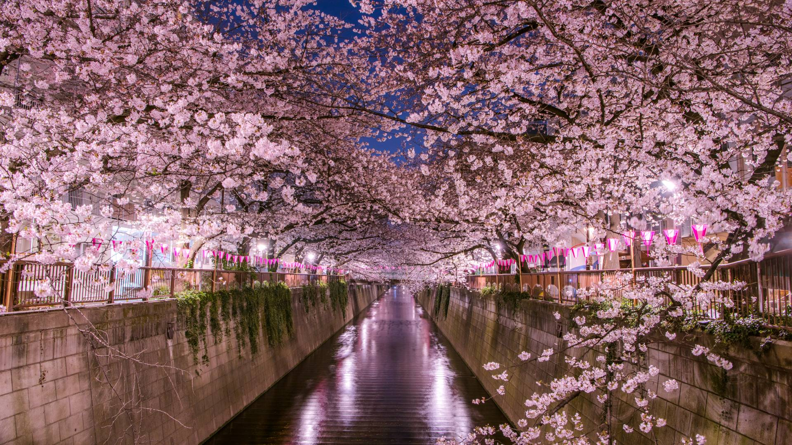

Exploring the Land of the Rising Sun
Join me on an unforgettable journey through the vibrant streets and serene landscapes of Japan. From the bustling metropolis of Tokyo to the tranquil temples of Kyoto, Japan offers a unique blend of tradition and modernity.
